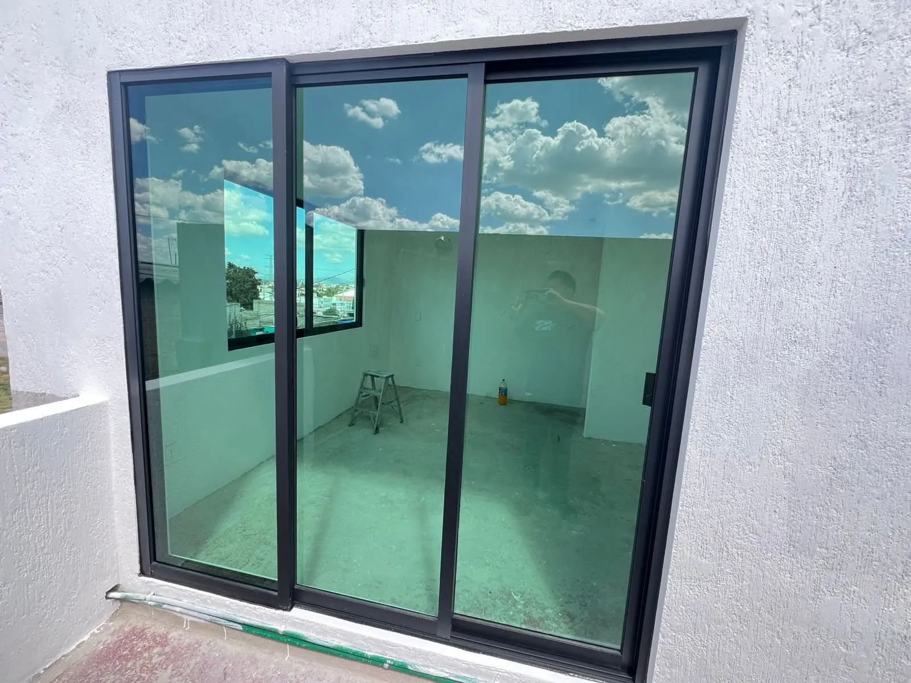
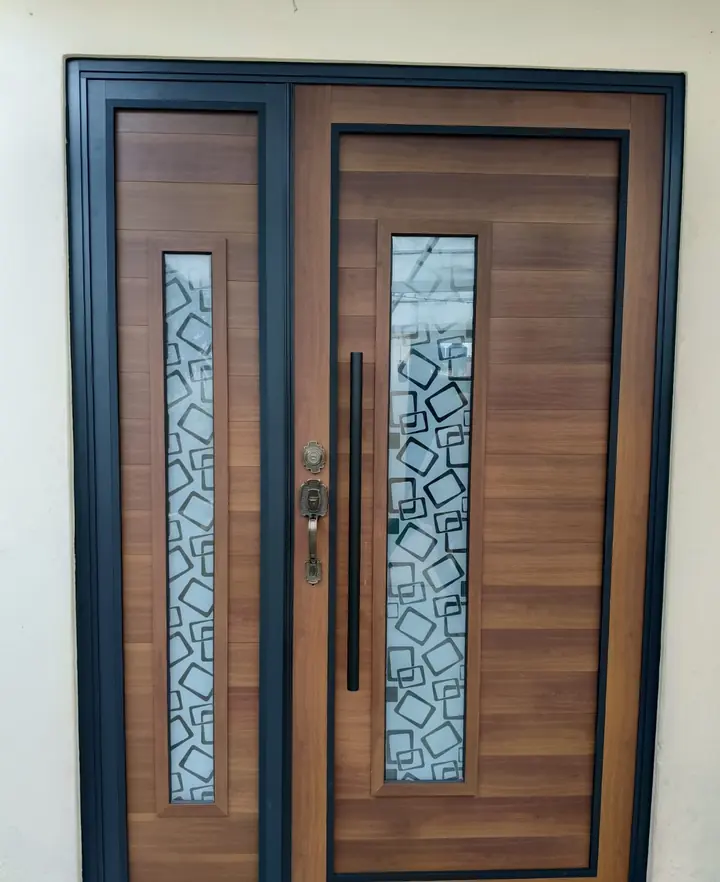
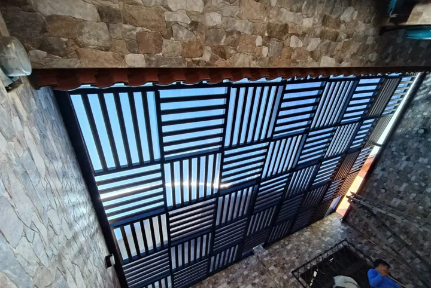
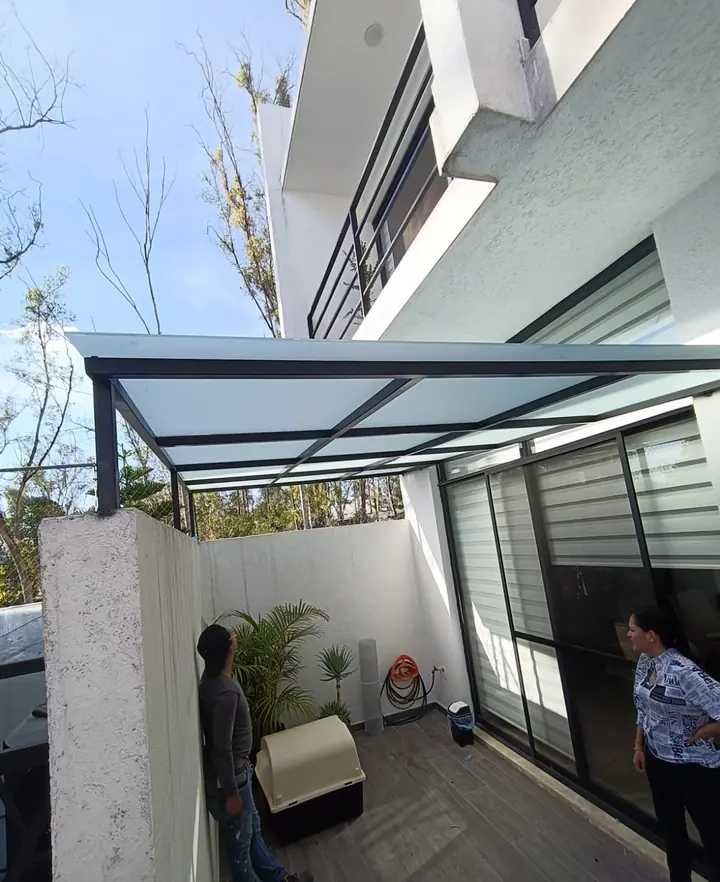
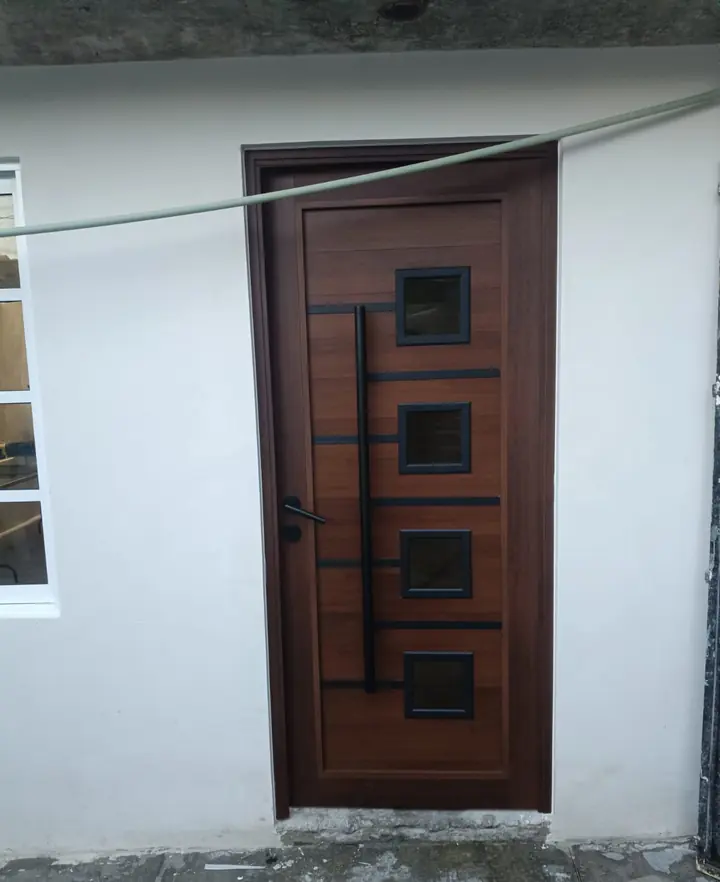
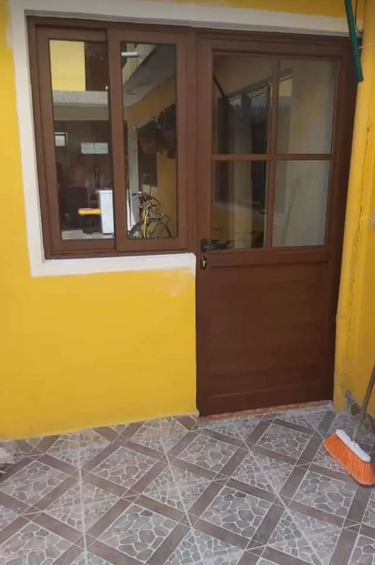

Acabados que combinan con tu casa
Aluminio negro mate, natural o imitación madera. Cristal claro, tintado, esmerilado o templado.
Vidrio y Aluminio Bosques
0% cargado
Fabricamos e instalamos en Cuautitlán Izcalli
Ventanas, puertas, domos, cubiertas y herrería hechas a tu medida, con medición en sitio e instalación profesional.

Ventanas, puertas, domos, cubiertas, cristal templado, canceles para baño, barandales y herrería en general.
Lo que hacemos
Desde una ventana hasta una cubierta completa. Elige lo que necesitas y te cotizamos.
Corredizas, abatibles y fijas, con cristal claro, tintado o esmerilado. Perfiles en negro mate, natural o acabado madera.
Cotizar ventanas
Puertas principales y de servicio con aluminio imitación madera, cristal esmerilado y jaladeras a tu gusto.
Cotizar puertas
Deja entrar la luz natural sin perder protección. Domos de policarbonato sobre estructura de aluminio, y también pérgolas.
Cotizar mi domo
Cristal templado para canceles de baño, cubiertas y fachadas. Vidrios y lunas cortados a la medida.
Cotizar cristalEstructura metálica con lámina, policarbonato o cristal para proteger tu auto, tu terraza o tu entrada.
Cotizar mi cubierta
Portones, barandales de acero inoxidable, escaleras y estructuras metálicas con acabado limpio y firme.
Cotizar herreríaTambién hacemos
Clic aquí y cuéntanos qué necesitasAluminio negro mate, natural o imitación madera. Cristal claro, tintado, esmerilado o templado.
Vamos a tu casa o negocio, tomamos medidas exactas y evitamos ajustes de último momento.

Nivelamos, sellamos y dejamos tu espacio listo para usarse.
Recibe tu cotización por WhatsApp.
Quiero cotizarAsí quedan los trabajos que hacemos en casas y negocios de la zona. Toca cualquier foto para verla en grande.
Cómo trabajamos
Cuatro pasos claros, sin sorpresas y con una sola persona de contacto durante todo el proyecto.
Agenda mi mediciónMándanos fotos, medidas aproximadas o solo una idea. Te orientamos sobre materiales, cristal y acabados.
Vamos al lugar, tomamos medidas exactas y confirmamos contigo el diseño antes de fabricar.
Cortamos y armamos cada perfil de aluminio y cada cristal según tus medidas. Nada de piezas genéricas.
Colocamos, nivelamos y sellamos. Revisas el resultado con nosotros y tu espacio queda listo.
Depende de las medidas, el tipo de cristal y el acabado del aluminio. Mándanos fotos y medidas aproximadas por WhatsApp y te enviamos una cotización.
Sí. Tomamos las medidas en sitio para que cada pieza se fabrique exacta y la instalación quede sin ajustes de último momento.
Trabajamos cristal claro, tintado, esmerilado y templado, según el uso: ventanas, puertas, canceles para baño, cubiertas y fachadas.
Fabricamos en aluminio negro mate, natural y con acabado imitación madera, para que combine con tu fachada y tu interior.
Depende del tamaño y la cantidad de piezas. Junto con tu cotización te damos una fecha estimada de entrega e instalación.
Atendemos Cuautitlán Izcalli y municipios cercanos del Estado de México. Escríbenos tu ubicación y confirmamos la cobertura.
Sí. Reparamos y damos mantenimiento a ventanas, puertas, canceles y herrería.
Cuéntanos qué necesitas y te respondemos por WhatsApp con opciones y cotización.
Responde tres preguntas rápidas. Armamos tu mensaje y lo enviamos por WhatsApp.
Te atendemos directo.
Sin intermediarios ni formularios eternos.
Av. Paseos del Bosque, Mz. 162, Lt. 2, Col. Bosques de Morelos, Cuautitlán Izcalli, Estado de México